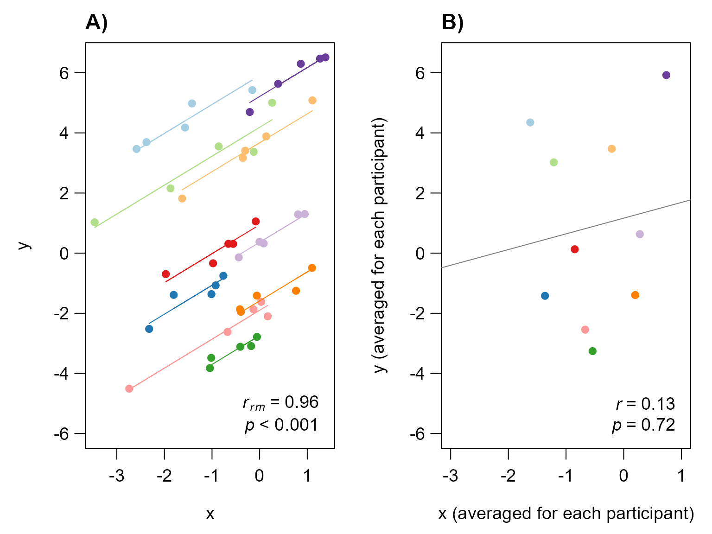
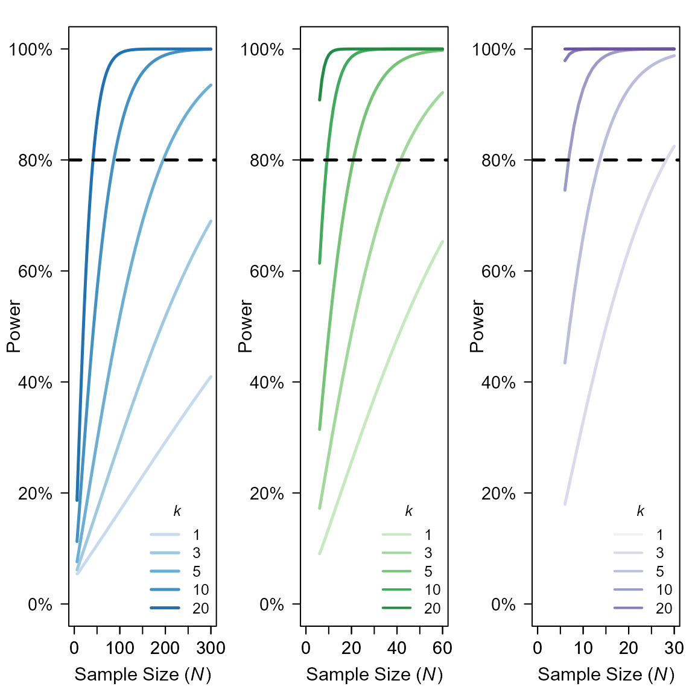
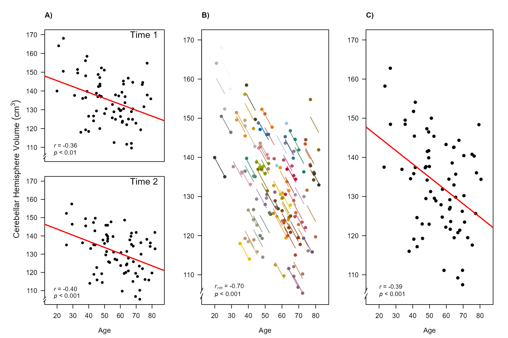
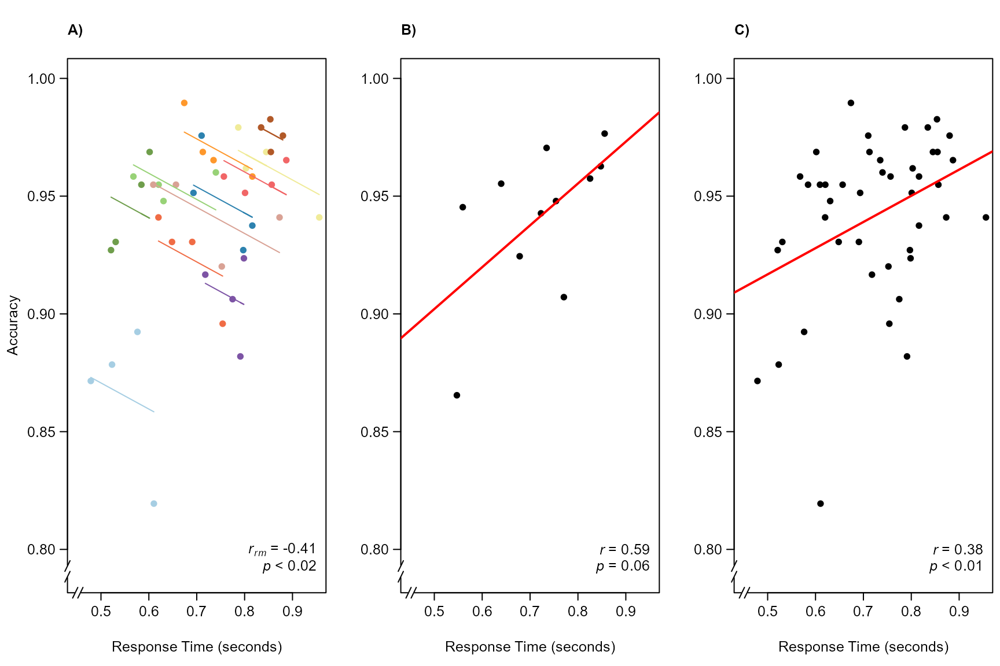
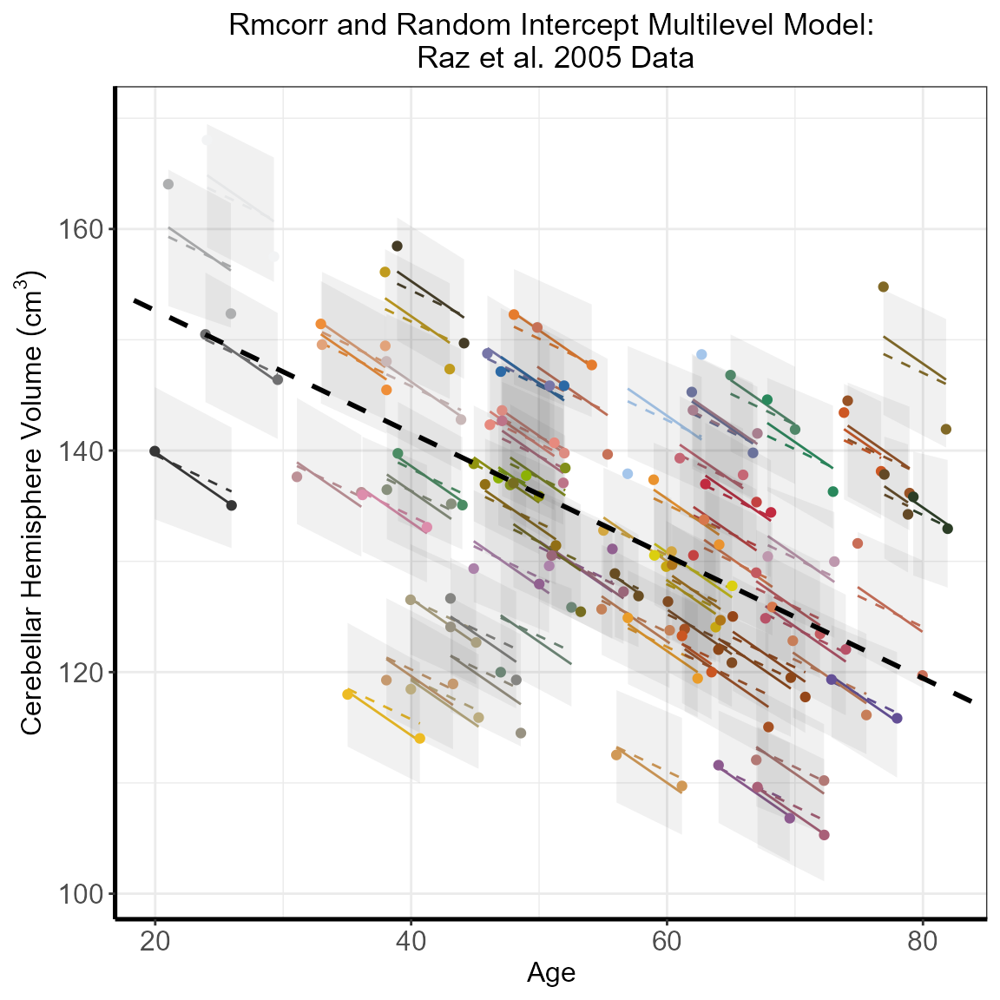
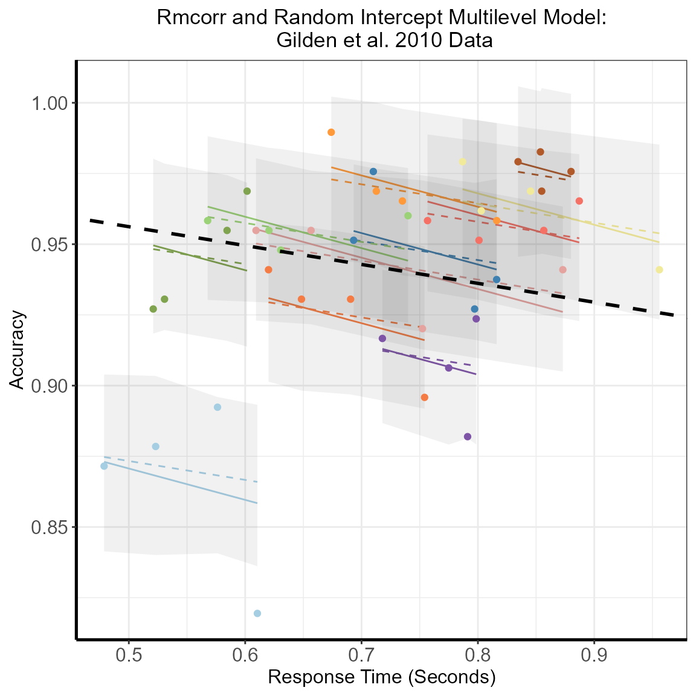
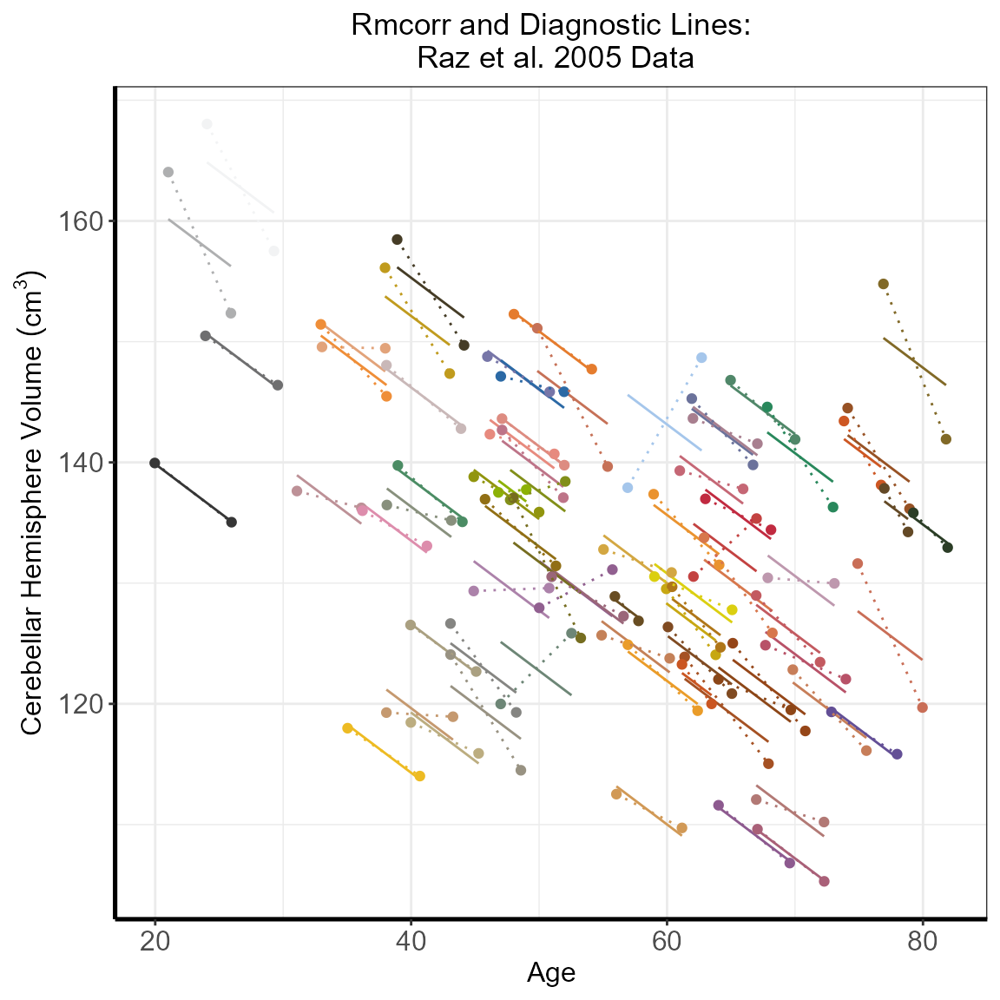

Reproduce the Results of Repeated Measures Correlation paper
Jonathan Bakdash and Laura Marusich
2022-08-17
Source:vignettes/New_rmcorr_paper_analyses_figures.Rmd
New_rmcorr_paper_analyses_figures.Rmd1. Figure 1: rmcorr and reg plot
# echo = FALSE, warning = FALSE, results = "hide",
set.seed(1)
initX <- rnorm(50)
newY <- NULL
newX <- NULL
sub <- rep(1:10, each = 5)
rsq <- .9
addx <- -2
for (i in 1:10){
addx <- addx + .25
tempData <- initX[sub == i] + addx
sdx <- sd(tempData)
sdnoise <- sdx * (sqrt((1-rsq)/rsq))
tempy <- tempData + rnorm(5,0,sdnoise) + rnorm(1,0,3)
newY <- c(newY, tempy)
newX <- c(newX,tempData)
}
exampleMat <-data.frame(cbind(sub,newX,newY))
###standard averaged regression plot
submeanx <- aggregate(exampleMat$newX, by = list(exampleMat$sub), mean)
submeany <- aggregate(exampleMat$newY, by = list(exampleMat$sub), mean)
mypal <- colorRampPalette(RColorBrewer::brewer.pal(10,'Paired'))
cols <- mypal(10)
example.rmc <- rmcorr(sub,newX,newY,exampleMat)
#> Warning in rmcorr(sub, newX, newY, exampleMat): 'sub' coerced into a factor
#for graphing: get the rmcorr coefficient (rounded) and p-value (using pvals.fct)
example.rmc.r <- sprintf("%.2f", round(example.rmc$r, 2))
example.rmc.p <- pvals.fct(example.rmc$p)
#ditto for cor
stdr <- cor.test(submeanx[,2], submeany[,2])
example.cor.r <- sprintf("%.2f", round(stdr$estimate, 2))
example.cor.p <- pvals.fct(stdr$p.value)
par(mfrow = c(1, 2), mgp = c(2.5, .75, 0), mar = c(4,4,2,1), cex = 1.2)
plot(example.rmc, xlab = "x", ylab = "y",
overall = F, palette = mypal, las = 1, ylim = c(-6, 6.5))
title("A)", adj = 0) #Removed for Frontiers formatting
text(1.25, -5, adj = 1, bquote(italic(r[rm])~"="~ .(example.rmc.r)))
text(1.25, -5.75, adj = 1, bquote(italic('p')~.(example.rmc.p)))
plot(submeanx[,2], submeany[,2], pch = 16, col = cols, las = 1,
xlab = "x (averaged for each participant)",
ylab = "y (averaged for each participant)", ylim=c(-6,6.5), xlim=c(-3, 1))
title("B)", adj = 0) #
text(0.90, -5, adj = 1, bquote(italic('r')~"="~ .(example.cor.r)))
text(0.90, -5.75, adj = 1, bquote(italic('p')~"="~.(example.cor.p)))
abline(lm(submeany[,2]~submeanx[,2]),col="gray50")
#(A) Rmcorr plot: rmcorr plot for a set of hypothetical data and (B) simple regression plot: the
#corresponding regression plot for the same data averaged by participant.
#dev.copy2eps(file="plots/Figure1_Rmcorr_vs_reg.eps", height = 6, width = 8)
#dev.copy(pdf, file="plots/Figure1_Rmcorr_vs_reg.pdf", height = 6, width = 8)
#dev.off()2. Figure 2: rmcorr vs OLS reg
par(mfrow = c(3,3), mar = c(1,1,.5,.5), mgp = c(2.5,.75,0),
oma = c(4,4,4,0), cex = 1.1)
makeminiplot <- function(subxs, sub.slope, intercept, constant=0, xax = "n",
yax = "n", legend = F){
mypal <- colorRampPalette(RColorBrewer::brewer.pal(10,'Paired'))
cols <- mypal(3)
# cols <- c("#A6CEE3", "#9D686D", "#6A3D9A")
subys <- list(3)
for (i in 1:3){
subys[[i]] <- subxs[[i]] * sub.slope + intercept*i + constant
}
plot(subxs[[1]],subys[[1]], type = "n", xlim =c(0,4), ylim = c(0,10),
xlab = "", ylab = "", xaxt = xax, yaxt = yax, las = 1)
allx <- unlist(subxs)
ally <- unlist(subys)
abline(lm(ally~allx))
for (i in 1:3) {
lines(subxs[[i]],subys[[i]], type = "o", col = cols[i], pch = 16)
}
if (legend) legend('bottomright', legend = "OLS", lwd = 1.25, bty = "n",
cex = 1, inset = -0.03)
}
subxs <- list(3)
subxs[[1]] <- seq(0,2,.25)
subxs[[2]] <- seq(1,3,.25)
subxs[[3]] <- seq(2,4,.25)
#ols is positive
makeminiplot(subxs, -1, 4, yax = "s", legend = T)
makeminiplot(subxs, 0, 2.75)
makeminiplot(subxs, 1, 1.5)
#ols is flat
makeminiplot(subxs, -1.5, 2.45, 3, yax = "s")
makeminiplot(subxs, 0, 0, 5)
makeminiplot(subxs, 1.5, -2.4, 7)
#ols is negative
makeminiplot(subxs, -.75, -2, 10, yax = "s", xax = "s")
makeminiplot(subxs, 0, -3.1, 10.9, xax = "s")
makeminiplot(subxs, .9, -4.6, 12, xax = "s")
mtext(side = 1, outer = T, line = 1.5, "x", at = c(.175, .5, .85))
mtext(side = 2, outer = T, line = 1.5, "y", at = c(.175, .5, .85), las = 1)
# mtext(side = 3, outer = T, line = .5,
# c("a) rmcorr = -1", "b) rmcorr = 0", "c) rmcorr = 1"),
# at = c(.175, .5, .85), las = 1, cex = 1.5)
#Figure 2. These notional plots illustrate the range of potential similarities and differences
#in the intra-individual association assessed by rmcorr and the inter-individual association
#assessed by ordinary least squares (OLS) regression. Rmcorr-values depend only on the
#intra-individual association between variables and will be the same across different patterns
#of inter-individual variability. (A) rrm = −1: depicts notional data with a perfect negative
#intra-individual association between variables, (B) rrm = 0: depicts data with no
#intra-individual association, and (C) rrm = 1: depicts data with a perfect positive
#intra-individual association. In each column, the relationship between subjects
#(inter-individual variability) is different, which does not change the rmcorr-values within a
#column. However, this does change the association that would be predicted by OLS regression
#(black lines) if the data were treated as IID or averaged by participant.
#dev.copy2eps(file="plots/Figure2_Rmcorr_vs_OLS.eps", height = 8, width = 8)
#dev.copy(pdf, file="plots/Figure2_Rmcorr_vs_OLS.pdf", height = 8, width = 8)
#dev.off()3. Figure 3: rmcorr w/data transformations
set.seed(10)
initX <- rnorm(15)
newY <- NULL
newX <- NULL
sub <- rep(1:3, each = 5)
rsq <- .7
addy <- 4
addx <- -2
for (i in 1:3){
addy <- addy - 1
addx <- addx + .25
tempData <- initX[sub == i] + addx
sdx <- sd(tempData)
sdnoise <- sdx * (sqrt((1-rsq)/rsq))
tempy <- tempData + rnorm(5,0,sdnoise) + rnorm(1,addy,1)
newY <- c(newY, tempy)
newX <- c(newX,tempData)
}
par(mfrow=c(1,3), mar = c(4,4,2,2), mgp = c(2.75, .75, 0), cex = 1.2)
###original plot
exampleMat <-data.frame(cbind(sub,newX,newY))
example1.rmc <- rmcorr(sub,newX,newY,exampleMat)
#> Warning in rmcorr(sub, newX, newY, exampleMat): 'sub' coerced into a factor
mypal <- colorRampPalette(RColorBrewer::brewer.pal(10,'Paired'))
plot(example1.rmc, xlab = "x", ylab = "",
overall = F, palette = mypal, xlim = c(-3.5, 1), ylim = c(-2.5,2), las = 1)
example1.rmc.r <- sprintf("%.2f", round(example1.rmc$r, 2))
example1.rmc.p <- pvals.fct(example1.rmc$p)
text(-3.5, 2, adj = 0, bquote(italic(r[rm])~"="~ .(example1.rmc.r)))
text(-3.5, 1.75, adj = 0, bquote(italic('p')~.(example1.rmc.p)))
mtext(side = 2, "y", las = 1, line = 2.5, cex = 1.2)
###add 1 to all x's, multiply by 2
exampleMat2 <- exampleMat
exampleMat2$newX <- exampleMat2$newX * .5 + 1
example2.rmc <- rmcorr(sub, newX, newY, exampleMat2)
#> Warning in rmcorr(sub, newX, newY, exampleMat2): 'sub' coerced into a factor
example2.rmc.r <- sprintf("%.2f", round(example2.rmc$r, 2))
example2.rmc.p <- pvals.fct(example2.rmc$p)
plot(example2.rmc, xlab = "x", ylab = "", overall = F,
palette = mypal, xlim = c(-3.5, 1), ylim = c(-2.5,2), las = 1)
text(-3.5, 2, adj = 0, bquote(italic(r[rm])~"="~ .(example2.rmc.r)))
text(-3.5, 1.75, adj = 0, bquote(italic('p')~.(example2.rmc.p)))
mtext(side = 2, "y", las = 1, line = 2.5, cex = 1.2)
###just add -2 to sub3's ys
exampleMat3 <- exampleMat
exampleMat3$newY[11:15] <- exampleMat3$newY[11:15] - 2
example3.rmc <- rmcorr(sub, newX, newY, exampleMat3)
#> Warning in rmcorr(sub, newX, newY, exampleMat3): 'sub' coerced into a factor
example3.rmc.r <- sprintf("%.2f", round(example3.rmc$r, 2))
example3.rmc.p <- pvals.fct(example3.rmc$p)
plot(example3.rmc, xlab = "x", ylab = "", overall = F,
palette = mypal, xlim = c(-3.5, 1), ylim = c(-2.5,2), las = 1)
text(-3.5, 2, adj = 0, bquote(italic(r[rm])~"="~ .(example3.rmc.r)))
text(-3.5, 1.75, adj = 0, bquote(italic('p')~.(example3.rmc.p)))
mtext(side = 2, "y", las = 1, line = 2.5, cex = 1.2)
#Figure 3. Rmcorr-values (and corresponding p-values) do not change with linear
#transformations of the data, illustrated here with three examples: (A) original, (B) x/2 + 1, and (C) y − 1.
#dev.copy2eps(file="plots/Figure3_Transformations.eps", height = 6, width = 12)
#dev.copy(pdf, file="plots/Figure3_Transformations.pdf", height = 6, width = 12)
#dev.off()4. Figure 4: Power curves
power.rmcorr<-function(k, N, effectsizer, sig)
{
pwr.r.test(n = ((N)*(k-1))+1, r = effectsizer, sig.level = sig)
#df are specified this way because pwr.r.test assumes the input is N, so it uses N - 2 for the df
}
par(mfrow=c(1,3), cex.lab=1.50, cex.axis=1.40, cex.sub=1.40, mar=c(4.5,4.5,1.75,1))
#Small effect size
k<-c(3, 5, 10, 20)
nvals <- seq(6, 300)
powPearsonSmall <- sapply(nvals, function (x) pwr.r.test(n=x, r=0.1)$power)
bluecolors<-c("#c6dbef", "#9ecae1", "#6baed6", "#4292c6", "#2171b5", "#084594")
plot(nvals, seq(0,1, length.out=length(nvals)),
xlab=expression(Sample~Size~"("*italic('N')*")"),
yaxt = "n", ylab = "Power", las = 1, col = "white",
xlim=c(0,300))
axis(1, at = seq(0, 300, 100))
yLabels <- seq(0, 1, 0.2)
axis(2, at=yLabels, labels=sprintf(round(100*yLabels), fmt="%2.0f%%"), las=1, cex.sub = 2)
for (i in 1:4)
{
powvals <- sapply(nvals, function (x) power.rmcorr(k[i], x, 0.1, 0.05)$power)
lines(nvals, powvals, lwd=2.5, col=bluecolors[i+1])
}
legend("bottomright", lwd=2.5, col=bluecolors, bty= 'n', legend=c("1", "3", "5", "10", "20"), title = expression(italic('k')),
cex = 1.2)
lines(nvals, powPearsonSmall, col=bluecolors[1], lwd= 2.5)
abline(a = 0.8, b=0, col=1, lty=2, lwd= 2.5)
#Medium effect size
k<-c(3, 5, 10, 20)
nvals <- seq(6, 60)
powPearsonMedium <- sapply(nvals, function (x) pwr.r.test(n=x, r=0.3)$power)
greencolors<-c("#c7e9c0","#a1d99b","#74c476","#41ab5d","#238b45","#005a32")
#orangecols<-brewer.pal(9, "Oranges")
#orangecols3<-c(orangecols[2],orangecols[3],orangecols[5],orangecols[7],orangecols[9])
plot(nvals, seq(0,1, length.out=length(nvals)),
xlab=expression(Sample~Size~"("*italic('N')*")"),
yaxt = "n", ylab = "Power", las = 1, col = "white",
xlim=c(0,60))
axis(1, at = seq(0, 60, 20))
yLabels <- seq(0, 1, 0.2)
axis(2, at=yLabels, main = "Power", labels=sprintf(round(100*yLabels), fmt="%2.0f%%"), las=1)
for (i in 1:4)
{
powvals <- sapply(nvals, function (x) power.rmcorr(k[i], x, 0.3, 0.05)$power)
lines(nvals, powvals, lwd=2.5, col=greencolors[i+1])
}
legend("bottomright", lwd=2, col=greencolors, bty = 'n', legend=c("1", "3", "5", "10", "20"), title = expression(italic('k')),
cex = 1.2)
lines(nvals, powPearsonMedium, col=greencolors[1], lwd = 2.5)
abline(a = 0.8, b=0, col=1, lty=2, lwd= 2.5)
#Large effect size
k<-c(3, 5, 10, 20)
nvals <- seq(6, 30)
powPearsonlarge <- sapply(nvals, function (x) pwr.r.test(n=x, r=0.5)$power)
purplecolors<-c("#f2f0f7", "#dadaeb", "#bcbddc", "#9e9ac8", "#807dba", "#6a51a3", "#4a1486")
plot(nvals, seq(0,1, length.out=length(nvals)),
xlab=expression(Sample~Size~"("*italic('N')*")"),
yaxt = "n", ylab = "Power", las = 1, col = "white", xlim=c(0,30))
axis(1, at = seq(0, 40, 10))
yLabels <- seq(0, 1, 0.2)
axis(2, at=yLabels, main = "Power", labels=sprintf(round(100*yLabels), fmt="%2.0f%%"), las=1)
for (i in 1:4)
{
powvals <- sapply(nvals, function (x) power.rmcorr(k[i], x, 0.5, 0.05)$power)
lines(nvals, powvals, lwd=2.5, col=purplecolors[i+2])
}
legend("bottomright", lwd=2, col=purplecolors, legend=c("1", "3", "5", "10", "20"), bty = 'n', title = expression(italic('k')),
cex = 1.2)
abline(a = 0.8, b=0, col=1, lty=2, lwd= 2.5)
lines(nvals, powPearsonlarge, col=purplecolors[2], lwd = 2.5)
#Figure 4. Power curves for (A) small, rrm, and r = 0.10, (B) medium, rrm, and r = 0.3, and (C) large effect sizes, rrm,
#and r = 0.50. X-axis is sample size. Note the sample size range differs among the panels. Y-axis is power. k denotes
#the number of repeated paired measures. Eighty percent power is indicated by the dotted black line. For rmcorr, the power of
#k = 2 is asymptotically equivalent to k = 1. A comparison to the power for a Pearson correlation with one data point per
#participant (k = 1) is also shown.
#dev.copy2eps(file="plots/Figure4_Power_curves.eps", height = 6, width = 6)
#dev.copy(pdf, file="plots/Figure4_Power_curve.pdf", height = 6, width = 6)
#dev.off()5. Brain volume and age rmcorr and simple reg/cor results and Figure 5
rmcorr and simple reg results
#Note for details on Raz: Data captured from Figure 8, Cerebellar Hemispheres (lower right)
#a) Reproduce correlations in the paper: Cross-sectional (correlation at Time 1)
Time1raz2005<-subset(raz2005, Time == 1)
Time2raz2005<-subset(raz2005, Time == 2)
a1.rtest <- cor.test(Time1raz2005$Age, Time1raz2005$Volume)
a2.rtest <- cor.test(Time2raz2005$Age, Time2raz2005$Volume)
a1.lm <- lm(Time1raz2005$Volume ~ Time1raz2005$Age)
a2.lm <- lm(Time2raz2005$Volume ~ Time2raz2005$Age)
summary.a1.lm <- summary(a1.lm)
summary.a2.lm <- summary(a2.lm)
a1.lm.r <- sprintf("%.2f", round(a1.rtest$estimate, 2)) #Same as Pearson correlation for simple regression
a1.lm.p <- pvals.fct(summary.a1.lm$coefficients[2,4])
a2.lm.r <- sprintf("%.2f", round(a2.rtest$estimate ,2)) #Same as Pearson correlation for simple regression
a2.lm.p <- pvals.fct(summary.a2.lm$coefficients[2,4])
#b) rmcorr analysis
brainvolage.rmc <- rmcorr(participant = Participant, measure1 = Age, measure2 = Volume, dataset = raz2005)
#> Warning in rmcorr(participant = Participant, measure1 = Age, measure2 =
#> Volume, : 'Participant' coerced into a factor
print(brainvolage.rmc)
#>
#> Repeated measures correlation
#>
#> r
#> -0.7044077
#>
#> degrees of freedom
#> 71
#>
#> p-value
#> 3.561007e-12
#>
#> 95% confidence interval
#> -0.8053581 -0.5637514
rmcorr.5b.r <- sprintf("%.2f", round(brainvolage.rmc$r, 2))
rmcorr.5b.p <- pvals.fct(brainvolage.rmc$p)
#c) simple regression on averaged data
avgRaz2005 <- aggregate(raz2005[,3:4], by = list(raz2005$Participant), mean)
avg.lm <- lm(Volume~Age, data = avgRaz2005)
summary.av.lm <- summary(avg.lm)
c.rtest <- cor.test(avgRaz2005$Age, avgRaz2005$Volume)
print(c.rtest)
#>
#> Pearson's product-moment correlation
#>
#> data: avgRaz2005$Age and avgRaz2005$Volume
#> t = -3.4912, df = 70, p-value = 0.000837
#> alternative hypothesis: true correlation is not equal to 0
#> 95 percent confidence interval:
#> -0.5662456 -0.1684542
#> sample estimates:
#> cor
#> -0.3850943
fig.5c.r <- sprintf("%.2f", round(c.rtest$estimate,2))
fig.5c.p <- pvals.fct(summary.av.lm$coefficients[2,4])
#Not graphed in Figure 5
#d) simple regression on aggregated data (incorrect overfit model):
#Although in this case it doesn't matter
brainvolage.lm<-lm(Volume~Age, data = raz2005)
print(brainvolage.lm)
#>
#> Call:
#> lm(formula = Volume ~ Age, data = raz2005)
#>
#> Coefficients:
#> (Intercept) Age
#> 151.9068 -0.3399
d.rtest <- cor.test(raz2005$Age, raz2005$Volume)
print(d.rtest)
#>
#> Pearson's product-moment correlation
#>
#> data: raz2005$Age and raz2005$Volume
#> t = -5.165, df = 142, p-value = 7.984e-07
#> alternative hypothesis: true correlation is not equal to 0
#> 95 percent confidence interval:
#> -0.5269809 -0.2503991
#> sample estimates:
#> cor
#> -0.3976861
layout(matrix(c(1,3,4,2,3,4), 2, 3, byrow = T))
#a
par(mar = c(1,4,4,2), oma = c(0,2,0,0), las = 1, cex.axis = 1.10, cex.sub = 1.10, cex.lab = 1.15)
#cex.lab=1.1, cex.axis=1.1, cex.main=1.2, cex.sub=1.2)
plot(Volume ~ Age, data = Time1raz2005, pch = 16, xlab = "", ylab = "",
xlim = c(15,85), ylim = c(105,170), xaxt = "n")
abline(a1.lm, col = "red", lwd = 2)
axis.break(axis = 2, style = "slash")
text(75, 170, "Time 1", cex = 1.5)
text(18,111, adj = 0, bquote(italic('r')~"="~ .(a1.lm.r)))
text(18,107, adj = 0, bquote(italic('p')~.(a1.lm.p)))
title("A)", adj = 0)
par(mar = c(4.5,4,1,2))
plot(Volume ~ Age, data = Time2raz2005, pch = 16, ylab = "",
xlim = c(15,85), ylim = c(105,170))
abline(a2.lm, col = "red", lwd = 2)
axis.break(axis = 2, style = "slash")
text(75, 170, "Time 2", cex = 1.5)
text(18,111, adj = 0, bquote(italic('r')~"="~ .(a2.lm.r)))
text(18,107, adj = 0, bquote(italic('p')~.(a2.lm.p)))
mtext(side = 2, expression(Cerebellar~Hemisphere~Volume~(cm^{3})), cex = .9,
outer = T, line = -1, las = 0)
#b
par(mar = c(4.5,3,4,2))
#blueset <- brewer.pal(8, 'Blues')
#pal <- colorRampPalette(blueset)
pal <- colorRampPalette(kelly(n = 22))
plot(brainvolage.rmc, overall = F, palette = pal, ylab = "", xlab = "Age",
cex = 1.2, xlim = c(15,85), ylim = c(105,170))
axis.break(axis = 2, style = "slash")
text(20,107, adj = 0, bquote(italic(r[rm])~"="~ .(rmcorr.5b.r)))
text(20,105, adj = 0, bquote(italic('p')~.(rmcorr.5b.p)))
title("B)", adj = 0)
#c
plot(Volume~Age, data = avgRaz2005, ylab = "", xlab = "Age", cex = 1.2, pch = 16,
xlim = c(15,85), ylim = c(105,170))
abline(brainvolage.lm, col = "red", lwd = 2)
axis.break(axis = 2, style = "slash")
text(20,107, adj = 0, bquote(italic('r')~"="~ .(fig.5c.r))) #incorrect positive sign in the paper
text(20,105, adj = 0, bquote(italic('p')~.(fig.5c.p)))
#text(20,107,paste('r =', round(c.rtest$est,2),'\np < 0.001'), adj = 0)
title("C)", adj = 0)
#Figure 5. Comparison of rmcorr and simple regression/correlation results for age and brain structure volume data.
#Each dot represents one of two separate observations of age and CBH for a participant. (A) #Separate simple
#regressions/correlations by time: each observation is treated as independent, represented by shading all the data
#points black. The red line is the fit of the simple regression/correlation. (B) Rmcorr: observations from the same
#participant are given the same color, with corresponding lines to show the rmcorr fit for each participant. (C)
#Simple regression/correlation: averaged by participant. Note that the effect size is greater (stronger negative
#relationship) using rmcorr (B) than with either use of simple regression models (A) and (C). This figure was
#created using data from Raz et al. (2005).
#dev.copy2eps(file="plots/Figure5_Volume_Age.eps", width = 9, height = 6)
#dev.copy(pdf, file="plots/Figure5_Volume_Age.pdf", height = 6, width = 6)
#dev.off()6. Visual search rmcorr and simple reg/cor results and Figure 6
rmcorr and simple reg results
#a - rmcorr
vissearch.rmc <- rmcorr(participant = sub, measure1 = rt, measure2 = acc, dataset = gilden2010)
#> Warning in rmcorr(participant = sub, measure1 = rt, measure2 = acc, dataset =
#> gilden2010): 'sub' coerced into a factor
print(vissearch.rmc)
#>
#> Repeated measures correlation
#>
#> r
#> -0.406097
#>
#> degrees of freedom
#> 32
#>
#> p-value
#> 0.01716871
#>
#> 95% confidence interval
#> -0.6611673 -0.06687244
#b - averaged data
gildenMeans <- aggregate(gilden2010[,3:4], by = list(gilden2010$sub), mean)
avg.lm <- lm(acc ~ rt, data = gildenMeans)
print(avg.lm)
#>
#> Call:
#> lm(formula = acc ~ rt, data = gildenMeans)
#>
#> Coefficients:
#> (Intercept) rt
#> 0.8132 0.1777
b.rtest <- cor.test(gildenMeans$rt, gildenMeans$acc)
print(b.rtest)
#>
#> Pearson's product-moment correlation
#>
#> data: gildenMeans$rt and gildenMeans$acc
#> t = 2.1966, df = 9, p-value = 0.05565
#> alternative hypothesis: true correlation is not equal to 0
#> 95 percent confidence interval:
#> -0.01409542 0.87910346
#> sample estimates:
#> cor
#> 0.5907749
#c - aggregated data (overfit, incorrectly treated as independent participants/observations)
agg.lm <- lm(acc ~ rt, data = gilden2010)
print(agg.lm)
#>
#> Call:
#> lm(formula = acc ~ rt, data = gilden2010)
#>
#> Coefficients:
#> (Intercept) rt
#> 0.8612 0.1111
c.rtest <- cor.test(gilden2010$rt, gilden2010$acc)
print(c.rtest)
#>
#> Pearson's product-moment correlation
#>
#> data: gilden2010$rt and gilden2010$acc
#> t = 2.6401, df = 42, p-value = 0.01158
#> alternative hypothesis: true correlation is not equal to 0
#> 95 percent confidence interval:
#> 0.09053513 0.60625185
#> sample estimates:
#> cor
#> 0.3772751
par(mfrow=c(1,3), mar=c(5,4.6,4,0.5), mgp=c(3.2,0.8,0), oma = c(0, 0, 0, 0), las = 1, cex.axis = 1.2, cex.sub = 1.1, cex.lab = 1.2)
#, cex.axis = 1.10, cex.sub = 1.10, cex.lab = 1.15)
plot(vissearch.rmc, overall = F, xlab = "Response Time (seconds)",
ylab = "Accuracy", cex = 1.2,
ylim = c(.79, 1), xlim = c(0.45, .95))
axis.break(axis = 1, style = "slash")
axis.break(axis = 2, style = "slash") #example of rounding and pvals.fct inside text()
text(0.95,0.8, adj = 1, bquote(italic(r[rm])~"="~.(round(vissearch.rmc$r, digits = 2))), cex = 1.2)
text(0.95,0.7925, adj = 1, bquote(italic('p')~"<"~.(pvals.fct(vissearch.rmc$p))), cex = 1.2)
title("A)", adj = 0)
plot(acc~rt, data = gildenMeans, cex = 1.2, pch = 16, ylim = c(.79, 1),
xlim = c(0.45, .95), xlab = "Response Time (seconds)", ylab = "")
abline(avg.lm, col = "red", lwd = 2)
axis.break(axis = 1, style = "slash")
axis.break(axis = 2, style = "slash")
text(0.95,0.8, adj = 1, bquote(italic('r')~"="~ .(round(b.rtest$estimate, digits = 2))), cex = 1.2)
text(0.95,0.7925, adj = 1, bquote(italic('p')~"="~.(pvals.fct(b.rtest$p.value))), cex = 1.2)
#text(.95,.8,paste('r =', round(b.rtest$est,2),'\np =', round(b.rtest$p.value,2)), adj = 1)
title("B)", adj = 0)
plot(acc~rt, data = gilden2010, xlab = "Response Time (seconds)", ylab = "",
cex = 1.2, pch = 16, ylim = c(.79, 1), xlim = c(0.45, .95))
abline(agg.lm, col = "red", lwd = 2)
axis.break(axis = 1, style = "slash")
axis.break(axis = 2, style = "slash")
text(0.95,0.8, adj = 1, bquote(italic('r')~"="~ .(round(c.rtest$estimate, digits = 2))), cex = 1.2)
text(0.95,0.7925, adj = 1, bquote(italic('p')~"<"~.(pvals.fct(c.rtest$p.value))), cex = 1.2)
title("C)", adj = 0)
#text(.95,.8,paste('r =', round(c.rtest$est,2),'\np =', round(c.rtest$p.value,2)), adj = 1)
#Figure 6. The x-axis is reaction time (seconds) and the y-axis is accuracy in visual search. (A) Rmcorr: each dot represents
#the average reaction time and accuracy for a block, color identifies participant, #and colored lines show rmcorr fits for
#each participant. (B) Simple regression/correlation (averaged data): each dot represents a block, (improperly) treated as an
#independent observation. The red line is #the fit to the simple regression/correlation. (C) Simple regression/correlation
#(aggregated data): improperly treating each dot as independent. This figure was created using data from Gilden et al. (2010).
#dev.copy2eps(file="plots/Figure6_Visual_Search.eps", width = 9, height = 6)
#dev.copy(pdf, file="plots/Figure6_Visual_Search.pdf", height = 9, width = 6)
#dev.off()Appendix C
- Rmcorr and multilevel model with Raz et al. 2005 data
brainvolage.rmc <- rmcorr(participant = Participant, measure1 = Age, measure2 = Volume, dataset = raz2005)
#Null multilevel model: Random intercept and fixed slope
null.vol <- lmer(Volume ~ Age + (1 | Participant), data = raz2005, REML = FALSE)
#Model fit
null.vol
#> Linear mixed model fit by maximum likelihood ['lmerMod']
#> Formula: Volume ~ Age + (1 | Participant)
#> Data: raz2005
#> AIC BIC logLik deviance df.resid
#> 977.4705 989.3497 -484.7352 969.4705 140
#> Random effects:
#> Groups Name Std.Dev.
#> Participant (Intercept) 11.287
#> Residual 3.024
#> Number of obs: 144, groups: Participant, 72
#> Fixed Effects:
#> (Intercept) Age
#> 163.7090 -0.5533
#Parameter Confidence Intervals
confint(null.vol)
#> Computing profile confidence intervals ...
#> 2.5 % 97.5 %
#> .sig01 9.5208850 13.6036847
#> .sigma 2.5713387 3.6236647
#> (Intercept) 155.1479333 172.3796868
#> Age -0.7016833 -0.4056009
#Model fitted values and confidence intervals for each participant (L1 effects)
set.seed(9999)
L1.predict.raz <- predictInterval(null.vol, newdata = raz2005, n.sims = 1000)
L1.predict.raz <- cbind(raz2005$Participant, L1.predict.raz)
theme_minimal = theme_bw() +
theme(
legend.position="none",
axis.line.x = element_line(color="black", size = 0.9),
axis.line.y = element_line(color="black", size = 0.9),
axis.text.x = element_text(size = 12),
axis.text.y = element_text(size = 12),
axis.title.x = element_text(size = 12),
axis.title.y = element_text(size = 12)
)
#Create custom color palette
# Blues<-brewer.pal(9,"Blues")
ggplot(raz2005, aes(x = Age, y = Volume, group = Participant, color = Participant)) +
geom_line(aes(y = predict(null.vol)), linetype = 2) +
geom_line(aes(y = brainvolage.rmc$model$fitted.values), linetype = 1) +
geom_ribbon(aes(ymin = L1.predict.raz$lwr,
ymax = L1.predict.raz$upr,
group = L1.predict.raz$`raz2005$Participant`,
linetype = NA), alpha = 0.07) +
theme_minimal +
labs(title = "Rmcorr and Random Intercept Multilevel Model:\n Raz et al. 2005 Data", x = "Age",
y = expression(Cerebellar~Hemisphere~Volume~(cm^{3}))) +
geom_point(aes(colour = Participant)) +
scale_colour_gradientn(colours=kelly(22)) + theme(plot.title = element_text(hjust = 0.5)) +
geom_abline(intercept = fixef(null.vol)[1], slope = fixef(null.vol)[2], colour = "black", size = 1, linetype = 2) 
#Appendix C, Figure 1: Dots are actual data values, with color indicating participant. Solid
#colored lines show the rmcorr model fit. The multilevel model fit is indicated by the dashed
#colored lines for Level 1 (participant) effects and the dashed black line for Level 2 (experiment)
#effects. The shaded areas are 95% confidence intervals for Level 1 effects. Note the models
#clearly overlap, despite the absence of confidence intervals for rmcorr.
#Converted to EPS file using Acrobat Pro b/c EPS doesn't support transparency
#ggsave(file = "plots/AppendixC_Figure1.pdf", width = 5.70 , height = 5.73, dpi = 300)
#dev.off()- Rmcorr and multilevel model with Gilden et al. 2010 data
vissearch.rmc <- rmcorr(participant = sub, measure1 = rt, measure2 = acc, dataset = gilden2010)
null.vis <- lmer(acc ~ rt + (1 | sub), data = gilden2010, REML = FALSE)
#Model 1: Random intercept + random slope for RT
model1.vis <- lmer(acc ~ rt + (1 + rt | sub), data = gilden2010, REML = FALSE)
#> boundary (singular) fit: see help('isSingular')
#Model Comparison
#a) Chi-Square
anova(null.vis, model1.vis)
#> Data: gilden2010
#> Models:
#> null.vis: acc ~ rt + (1 | sub)
#> model1.vis: acc ~ rt + (1 + rt | sub)
#> npar AIC BIC logLik deviance Chisq Df Pr(>Chisq)
#> null.vis 4 -197.41 -190.27 102.70 -205.41
#> model1.vis 6 -193.46 -182.75 102.73 -205.46 0.0497 2 0.9754
#b) Evidence ratio using AIC
Models.vis<-list()
Models.vis<-c(null.vis, model1.vis)
if (requireNamespace("AICcmodavg", quietly = TRUE)){
ModelTable2<-aictab(Models.vis, modnames = c("null", "Model 1"))
ModelTable2
evidence(ModelTable2)
}
#>
#> Evidence ratio between models 'null' and 'Model 1':
#> 13.43
#Estimating and graphing null model
#Parameter Confidence Intervals
confint(null.vis)
#> Computing profile confidence intervals ...
#> 2.5 % 97.5 %
#> .sig01 0.02138120 0.05796124
#> .sigma 0.01294851 0.02139924
#> (Intercept) 0.91815424 1.05718722
#> rt -0.15404840 0.02955915
#Model fitted values and confidence intervals for each participant (L1 effects)
set.seed(9999)
L1.predict.gilden <- predictInterval(null.vis, newdata = gilden2010, n.sims = 1000)
L1.predict.gilden <- cbind(gilden2010$sub, L1.predict.gilden)
theme_minimal = theme_bw() +
theme(
legend.position="none",
axis.line.x = element_line(color="black", size = 0.9),
axis.line.y = element_line(color="black", size = 0.9),
axis.text.x = element_text(size = 12),
axis.text.y = element_text(size = 12),
axis.title.x = element_text(size = 12),
axis.title.y = element_text(size = 12)
)
#Create custom color palette
Colors12<-brewer.pal(12,"Paired")
ggplot(gilden2010, aes(x = rt, y = acc, group = sub, color = sub)) +
geom_line(aes(y = predict(null.vis)), linetype = 2) +
geom_line(aes(y = vissearch.rmc$model$fitted.values), linetype = 1) +
geom_ribbon(aes(ymin = L1.predict.gilden$lwr,
ymax = L1.predict.gilden$upr,
group = L1.predict.gilden$`gilden2010$sub`,
linetype = NA),
alpha = 0.07) +
theme_minimal + theme(plot.title = element_text(hjust = 0.5)) +
labs(title = "Rmcorr and Random Intercept Multilevel Model:\n Gilden et al. 2010 Data", x = "Response Time (Seconds)", y = "Accuracy") +
geom_point(aes(colour = sub)) +
scale_colour_gradientn(colours=Colors12) +
geom_abline(intercept = fixef(null.vis)[1], slope = fixef(null.vis)[2], colour = "black", size = 1, linetype = 2) +
scale_y_continuous(breaks=seq(0.80, 1.0, 0.05)) +
scale_x_continuous(breaks=seq(0.50, 0.9, 0.1)) 
#Converted to EPS file using Acrobat Pro b/c EPS doesn't support transparency
#Appendix C, Figure 2: Dots are actual data values, with color indicating participant. Solid
#colored lines show the rmcorr model fit. The multilevel model fit is indicated by the dashed
#colored lines for Level 1 (participant) effects and the dashed black line for Level 2 (experiment)
#effects. The shaded areas are 95% confidence intervals for Level 1 effects. Note the models
#clearly overlap, despite the absence of confidence intervals for rmcorr.
#ggsave(file = "plots/AppendixC_Figure2.pdf", width = 6.5 , height = 6.5, dpi = 300)
#Estimating CIs: Convergence problems with model 1
confint(model1.vis)
#> Computing profile confidence intervals ...
#> 2.5 % 97.5 %
#> .sig01 0.02197527 0.11293808
#> .sig02 -1.00000000 1.00000000
#> .sig03 0.00000000 Inf
#> .sigma 0.01303108 0.02157782
#> (Intercept) 0.91458725 1.06378202
#> rt -0.15425292 0.03364490
warnings()
set.seed(9999)
predictInterval(model1.vis, newdata = gilden2010, n.sims = 1000)
#> fit upr lwr
#> 1 0.8663920 0.8960908 0.8352832
#> 2 0.8683327 0.8992494 0.8385416
#> 3 0.8707389 0.8997923 0.8393785
#> 4 0.8725921 0.9043416 0.8411908
#> 5 0.9429413 0.9732029 0.9159473
#> 6 0.9432319 0.9722811 0.9162444
#> 7 0.9500212 0.9787765 0.9220920
#> 8 0.9521220 0.9792167 0.9237837
#> 9 0.9481541 0.9752953 0.9207015
#> 10 0.9557798 0.9844996 0.9267692
#> 11 0.9559257 0.9853144 0.9268080
#> 12 0.9596370 0.9887583 0.9285575
#> 13 0.9443758 0.9730895 0.9144351
#> 14 0.9430301 0.9705867 0.9121712
#> 15 0.9481910 0.9777425 0.9189827
#> 16 0.9500669 0.9785099 0.9180516
#> 17 0.9546490 0.9828561 0.9234057
#> 18 0.9511326 0.9826628 0.9211205
#> 19 0.9583308 0.9867742 0.9280774
#> 20 0.9601212 0.9901520 0.9312060
#> 21 0.9227967 0.9488316 0.8935664
#> 22 0.9244902 0.9553428 0.8959148
#> 23 0.9277636 0.9569939 0.8986043
#> 24 0.9300477 0.9599092 0.9000850
#> 25 0.9625122 0.9928161 0.9347764
#> 26 0.9680937 0.9978023 0.9390449
#> 27 0.9706817 1.0010774 0.9416283
#> 28 0.9749069 1.0033890 0.9446229
#> 29 0.9337347 0.9613853 0.9051130
#> 30 0.9427611 0.9688831 0.9133651
#> 31 0.9495472 0.9767039 0.9189270
#> 32 0.9506709 0.9813415 0.9226078
#> 33 0.9092402 0.9374052 0.8801574
#> 34 0.9081569 0.9380428 0.8783812
#> 35 0.9101271 0.9393227 0.8784178
#> 36 0.9130451 0.9411345 0.8840515
#> 37 0.9530667 0.9841683 0.9233226
#> 38 0.9633384 0.9921144 0.9363187
#> 39 0.9616431 0.9909585 0.9335434
#> 40 0.9655959 0.9935503 0.9362402
#> 41 0.9739775 1.0029519 0.9440092
#> 42 0.9725509 1.0019449 0.9447089
#> 43 0.9767107 1.0060772 0.9455765
#> 44 0.9756523 1.0049782 0.9452859
warnings()Diagnostic Plot: Rmcorr and straight lines between points (not in paper)
brainvolage.rmc <- rmcorr(participant = Participant, measure1 = Age, measure2 = Volume, dataset = raz2005)
#> Warning in rmcorr(participant = Participant, measure1 = Age, measure2 =
#> Volume, : 'Participant' coerced into a factor
print(brainvolage.rmc)
#>
#> Repeated measures correlation
#>
#> r
#> -0.7044077
#>
#> degrees of freedom
#> 71
#>
#> p-value
#> 3.561007e-12
#>
#> 95% confidence interval
#> -0.8053581 -0.5637514
theme_minimal = theme_bw() +
theme(
legend.position="none",
axis.line.x = element_line(color="black", size = 0.9),
axis.line.y = element_line(color="black", size = 0.9),
axis.text.x = element_text(size = 12),
axis.text.y = element_text(size = 12),
axis.title.x = element_text(size = 12),
axis.title.y = element_text(size = 12)
)
ggplot(raz2005, aes(x = Age, y = Volume, group = Participant, color = Participant)) +
geom_line(aes(y = brainvolage.rmc$model$fitted.values), linetype = 1) +
theme_minimal +
labs(title = "Rmcorr and Diagnostic Lines:\n Raz et al. 2005 Data", x = "Age",
y = expression(Cerebellar~Hemisphere~Volume~(cm^{3}))) +
geom_point(aes(colour = Participant)) +
scale_colour_gradientn(colours=kelly(22)) + theme(plot.title = element_text(hjust = 0.5)) + geom_line(linetype = 3)
#ggsave(file = "plots/Figure_rmcorr_diagnostic.pdf", width = 5.70 , height = 5.73, dpi = 300)
#ggsave(file = "plots/Figure_rmcorr_diagnostic.eps", width = 5.70 , height = 5.73, dpi = 300)
#dev.off()